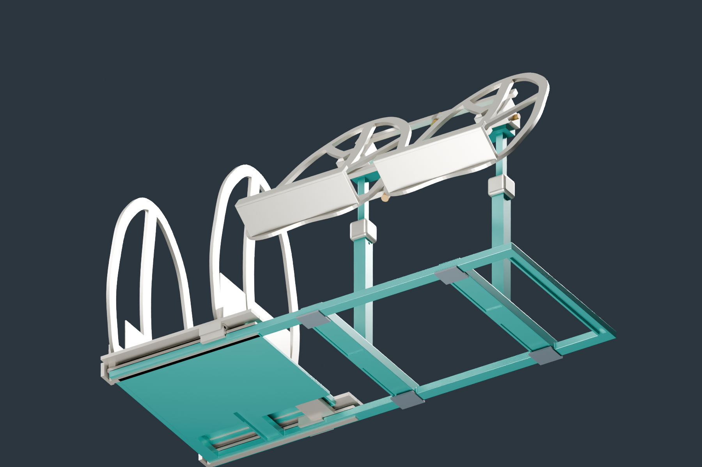

재료는 줄이고, 단면 높이는 유지
지주와 가로 연결대는 속을 비우고 연결 끝부분은 채웁니다. 수평 보관판은 2 mm 표피와 2 × 6 mm 리브를 조합합니다.
PRODUCT ENGINEERING
알루미늄 6061-T6 · 계산 조건 기반
MOVEMENT & SUPPORT
어디로 움직이고, 무엇이 멈추게 할까요?
모델에 담긴 구조와 다음 설계 과제를 함께 살펴봅니다.
작동 원리도 · 형상 축약 · 버튼으로 잠금/해제 비교
T형 레일과 이를 감싸는 슈가 이동을 안내하고 들림을 막습니다. 이동 방향의 고정에는 별도의 압착 클램프가 필요합니다.
레버나 손잡이로 패드를 압착하면 정지마찰이 미끄러짐을 막습니다. 압착을 풀면 다시 움직여 원하는 간격에 맞출 수 있습니다.
모델에 반영T 레일 · 포획형 슈 · 들림 방지 턱
추가 설계클램프 작동부 · 패드 재질 · 압착력
수평 고정력은 아직 계산되지 않았습니다. 모델의 브레이크 외형은 높이 조절 지주용입니다.
작동 원리도 · 형상 축약 · 실제 각도 잠금 용량은 미검증
책의 무게는 독서판을 아래로 돌리려는 모멘트를 만듭니다. 축은 회전을 지지하고, 별도의 잠금부가 그 회전을 막아야 합니다.
모델에 반영후면 회전축 · 축을 받치는 지지부
추가 설계마찰면·조임부 또는 톱니 잠금부
하중이 큰 쪽 관절의 요구량입니다. 현재 장치가 제공하는 잠금 성능을 측정한 값이 아닙니다.
책 높이 220 mm·두께 50 mm, 각도 30–75° 중 최대값, 좌우 70:30 분담, 하중계수 2. 경량안 상부 금속 자중과 추가 부속 0.10 kg을 포함합니다. 기존 부재 계산과 같은 이상적 지지조건을 사용합니다.
책의 하중은 판에서 관절, 지주를 거쳐 책상까지 전달됩니다. 이 경로의 연결부가 단단히 고정되어야 부재 계산의 지지조건에 가까워집니다.

지주와 가로 연결대는 속을 비우고 연결 끝부분은 채웁니다. 수평 보관판은 2 mm 표피와 2 × 6 mm 리브를 조합합니다.
계산은 지주가 슬리브에서 이상적으로 고정된다고 가정합니다. 실제 유격과 미끄러짐이 있으면 변형이 더 커질 수 있습니다.
독서판의 휨과 잠금부의 미끄러짐은 다른 검토 항목입니다. 부재 계산만으로 완성품의 5 kg 지지를 확정하지 않습니다.
수평 보관판 적재와 독서대 사용은 별도 하중 사례입니다.
관절·체결부·잠금 용량·베이스 포켓의 검증이 남아 있습니다.
형상 구현 · 잠금 요구량 계산 · 실제 유지 성능 검증을 구분합니다.
70:30 편심 · 상부 자중 포함
하중 계수 2.0 적용
| 책 무게 | 지주 휨 | 지주 응력 ×2 | 독서판 휨 | 관절 1개 요구 토크 ×2 |
|---|
같은 책 크기와 상부 자중을 적용합니다. 지주·관절은 0.1°, 독서판은 5° 간격으로 계산한 표본의 최댓값입니다. 관절 토크는 필요한 성능이며 장치의 실제 유지 능력이 아닙니다.
| 검토 부재 | 사용 하중 휨 | 설계 하중 응력 | 계산 범위 |
|---|
휨은 사용 하중, 응력은 2배 설계 하중입니다. 데크는 책을 수직으로 세워 수납하는 별도 경우이며 독서대와 동시에 하중을 주지 않습니다. 0.5 mm 휨 목표는 지주 자체에 적용합니다. 240 MPa 항복 비교는 검토한 부재의 명목 응력 기준입니다.
8 mm 데크를 2 mm 상판과 2 × 6 mm 하부 리브로 변경합니다. 책이 닿는 높이는 유지합니다.
8 × 8 × 1 mm 지주, 18 × 14 × 1.5 mm 브리지. 연결 끝부분은 속을 채워 둡니다.
14 mm 외형 안에 9.2 mm 사각 구멍을 만듭니다. 원본의 막힌 내부를 수정했습니다.
장착부와 레일 아래를 남기고 바닥면을 비웁니다. 지붕·벽 2.5 mm는 제안 치수이며 강도 검증은 남아 있습니다.
현재 조건을 저장하면 하중과 결과를 나란히 볼 수 있습니다.
| 설계 | 하중 조건 | E | 휨 | 응력 |
|---|